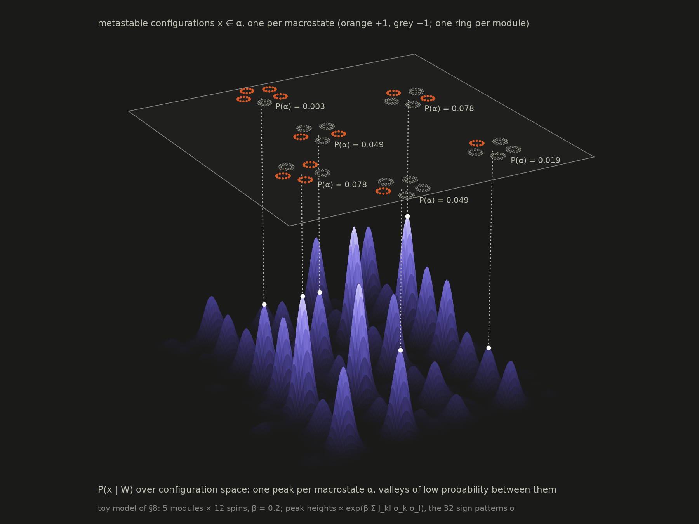

How many edges does the data pay for?
A network with N nodes has N(N−1)/2 possible edges. Maximum likelihood switches on all of them, because a tiny weight always fits the noise a little better than a zero. Peixoto's answer is to count bits: an edge stays only if writing it down costs less than it saves in describing the data. Everything on this page is recomputed in your browser from a simulated time series on Zachary's karate club, the network of the paper's Fig. 1.
- L1 regularization gets zeros by shrinking every weight, so sparsity and accuracy fight (§1).
- A prior density on real weights is not a description length, so MAP can't choose the sparsity (§2).
- Quantize the weights and let a hierarchy of discrete priors learn the weight distribution (§3).
- The result is no longer convex, so fit it with greedy moves that each lower Σ (§4–6), and check it (§7).
- The fitted model is a generative model: on modular networks its states split into macrostates (§8).
The data
Each node is a spin, x_i = ±1. At every step all spins update at once, each one leaning toward the weighted sum of its neighbours' current spins. The 78 karate edges get weights drawn from Normal(N/2E, 0.01), as in the paper, and the other 483 pairs get zero. The reconstruction sees only the time series on the right and has to recover the network on the left.
The true network W
Zachary's karate club, line width ∝ weight. Change the weights in the top bar.
What the reconstruction sees
The first 240 time steps, one row per node. Light is +1, dark is −1. Hover for the node and time.
L1: sparsity costs shrinkage
The Laplace prior turns MAP into the LASSO. As λ grows, weights hit exactly zero one by one, so λ sets the density of the network. Cross-validation is the usual way to pick it. But the same λ that removes spurious edges also pulls the true ones toward zero. Drag λ, or click any chart, and watch both happen at once.
Every inferred weight as λ changes
Blue: true edges. Red: pairs that should be zero. Grey ticks at the right edge: the true weights (Fig. 1a, bottom).
The network at this λ
Blue: true edges found. Red: spurious edges. Faint grey: true edges missed. Width ∝ inferred weight.
Held-out log-likelihood
Summed over the 5 folds. Its peak is λ̂.
Number of edges E
The thin line is the true E = 78.
Similarity to the truth
Jaccard s(W, Ŵ) on weights and on the binary network, Eq. (11).
A density is not a code length
MDL reads −log P(X, W) as the length of a message: bits for the data given W, plus bits for W. That only works if P(W) is a probability. A density p(w) can exceed 1, so −log p(w) can be negative. Its value also changes if you change units, since p(w) does but the model doesn't. To get a real code you have to say how precisely each weight is written down: round it to a grid of step Δ. Then each value has probability ≈ p(w)·Δ, and precision costs log(1/Δ) bits per weight.
Cost of writing down one weight
Laplace density −log₂ p(w | λ), Eq. (18), vs. the quantized mass −log₂ P(w | λ, Δ), Eq. (19). Below 0 bits is not a code length.
What MAP over λ prefers
Σ in bits on your data, for the true weights and for the empty network, as λ varies. Dots: each line's minimum.
The MDL prior: let the weights choose their own distribution
The paper builds the prior in levels. First the number of edges E, then which pairs they are (A). Then, instead of one Laplace draw per edge, a small set of K distinct values z_k (the weight categories). Each edge takes one of them, with category counts m_k drawn uniformly. Summing out the category probabilities gives the closed form of Eq. (27). Each nonzero weight now costs about log K bits instead of log(1/Δ). Precision is paid once per category, not once per edge. Below are draws from each prior, with λ = 10 so the weights are on the karate scale.
Laplace density, Eq. (7)
Every pair gets a real weight. A draw is never sparse: zeros have probability 0.
Sparse A + quantized Laplace, Eqs. (15), (19)
Exactly E edges. Weights on a grid of step Δ = 0.02, but still shrunk toward zero by the Laplace shape.
The full hierarchy, Eq. (27)
E edges, but only K distinct values. The data, not the Laplace shape, decide where they go.
Fitting it: greedy moves that lower Σ
The prior is no longer convex, so the paper replaces the LASSO solver with a set of moves. Each move is tried and kept only if it shortens the description. One sweep runs through all of them, and the fit stops when a few sweeps in a row change nothing. Press play to watch the fit on your data. The fit uses fast deterministic steps; §5 takes the moves one at a time and runs each exactly as the paper does.
| Move | What it proposes | Here |
|---|---|---|
| Edge update | For a pair (i, j), one of: (1) move it to an existing category z_k, (2) give it a new value, which opens a new category, (3) set it to 0. | All 561 pairs each sweep. The paper visits only the κN best candidates found by NNDescent, which is what makes it subquadratic. |
| Edge move | Slide an edge (i, j) to (i, u): same value, new endpoint. | One try per node per sweep. |
| Edge swap | Exchange endpoints of two edges, (i, j), (u, v) → (i, v), (u, j). Counts, and so the prior, are unchanged. | N tries per sweep. |
| Category value | Move one z_k, and with it every edge in that category. | A 1-D golden-section search. §5 runs the paper's random bisection. |
| Merge / split | Fuse two neighbouring categories, or cut one in two, then re-search the values. | One of each per sweep. The split cuts at the biggest gap in the values each edge would prefer, not at random. |
Bits saved, and bits spent
Relative to the empty network. Blue: fewer bits for the data. Orange: more bits for W. Violet: the net saving, which only ever rises.
The network at this step
Blue: true edges found. Red: spurious. Faint grey: true edges not yet found.
Weights and their categories
One dot per nonzero weight (blue true, red spurious). Violet lines: the categories z_k with their counts. Grey ticks: the true weights.
Where the bits for W go
The four lines of Eq. (27) at this step, in bits.
Inside a sweep: each move, as the paper runs it
Pick a move and a state of the fit, and the page proposes one move of that kind, exactly as §V describes it. For moves that choose a value, the grey curve is the full 1-D problem: the exact change in description length ΔΣ for every value the move could pick. The search never sees that curve. It only evaluates ΔΣ at its probes (numbered circles), keeping a bracket (shaded) that contains the best point found so far (black dot). Random bisection draws each probe uniformly inside the bracket, where a deterministic search would always take the same golden-section point. The move is kept only if the value it ends on gives ΔΣ < 0.
The search
What the move touches
The state's network (blue true, red spurious). Violet: the entries being changed or added. Orange: entries being removed. For a split, each edge in the category is violet or aqua, for the side it is on.
What the categories buy
Keep the edges the fit found, but force them into K categories (1-D k-means, then the best value for each). More categories fit the data a little better and cost about 27 bits each, plus the cost of saying which edge has which. The fit's own K is wherever this curve bottoms out. With the paper's near-equal weights that is K = 1. Switch the top bar to two strengths and the minimum moves to 2. With spread out it lands where extra resolution stops paying for itself.
Σ against the number of categories
Each line relative to its own value at the best K. Hover a point for the category values.
Fitted vs. true weights
One dot per true edge, true weight against fitted weight. A dot at 0 is a missed edge. The diagonal is perfect recovery.
MDL vs. L1 as data grow
The paper's Fig. 2, for the karate network. Three ways of choosing Ŵ: the MDL prior; L1 with λ from 5-fold cross-validation; and the "true" prior, a normal density with the true mean and spread on the nonzero weights, Eq. (30). This is the one slow computation, about a minute per weight setting, so it was run beforehand with the same code (node precompute.mjs). Dots are means over three simulated data sets, whiskers their range. It follows the top bar's weight setting.
Weighted similarity s(W, Ŵ)
1 is perfect.
Binary similarity s(A, Â)
Right edges, regardless of weight.
Edges inferred E
The thin line is the true E = 78.
Macrostates: broken replica symmetry
A reconstructed network is also a generative model, which is what the paper uses to predict interventions. On a modular network with strong couplings, the equilibrium Ising distribution (Eq. 35) falls apart into islands of high probability separated by valleys of low probability. Dynamics started on one island stays there for a time that grows exponentially with N, so what you would actually observe is P(x | α) for one macrostate α, not the whole mixture. Here eight replicas of one toy model (five modules of twelve spins, all +1 inside a module, a few ±0.6 couplings between modules, θ = 0) run the same heat-bath dynamics from random starts. The overlap q = (1/N) Σ_i x_iᵃ x_iᵇ between two replicas measures whether they ended up in the same place.
The landscape the replicas live on
P(x | W) for this toy model at β = 0.2, over a 2-D layout of configuration space in which neighbouring peaks differ by one module flip. Each of the 32 module sign patterns is a peak, with height ∝ exp(β Σ J_kl σ_k σ_l) from the summed inter-module couplings J_kl. Six of them are drawn on the plane above, each joined to its peak by a dotted line. A pattern and its global flip (the two P(α) = 0.078 configurations) have equal height, because θ = 0.

Replica 1, live
Orange: x_i = +1 (present). Grey: −1 (absent). Lines between modules: aqua for +0.6, amber for −0.6.
Every replica's macrostate
One row per replica, one cell per module: orange mostly +1, blue mostly −1, faint undecided. A row's sign pattern is its α.
Overlap distribution P(q)
All 28 replica pairs over the last 600 sweeps. One peak: replica symmetric. Several: broken.
What this page leaves out
Community structure (§V.B). Replacing the uniform P(A | E) by a degree-corrected SBM gives modular networks shorter descriptions, which regularizes further. Fitting it adds merge-split moves on the node partition (Ref. [64]). Node parameters (§V.C) such as Ising fields θ_i get the same quantized treatment, Eq. (34), with zero allowed. They are fixed at zero here. Empirical cases. The paper then reconstructs the Brazilian congress votes and the microbiome networks, where an L1 comparison is infeasible. On the microbiome it uses the fitted Ising model to predict which species' removal tips the system into another macrostate (§8 shows what a macrostate is).
Implementation notes: kinetic Ising likelihood, exact, θ = 0. MDL uses λ = 1, Δ = 10⁻⁸ as in the paper, starts from the empty network, and runs a fixed sequence of moves rather than the random order of graph-tool. L1 is cyclic coordinate descent with a proximal Newton step per entry, on a grid of 28 λ values, warm-started from large λ down. The reference C++ implementation is in graph-tool.